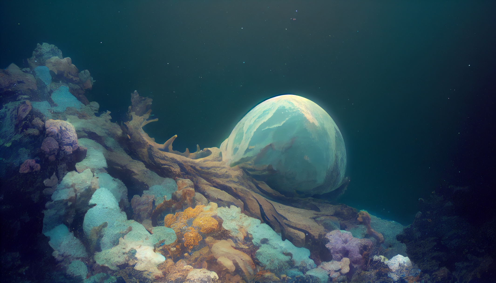
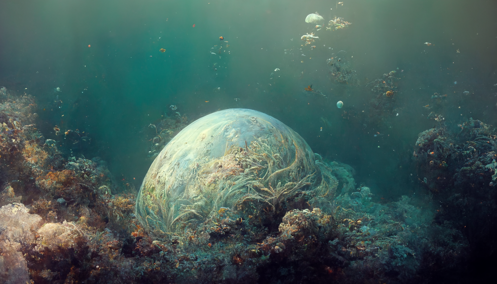
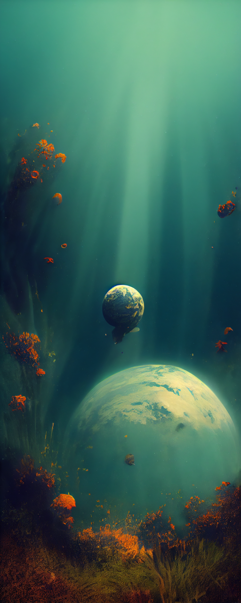

⦿ Insight ⦿
This prompt: Underwater Planets and the outcome are also one of my favorites. The atmosphere created by AI, and the abstract form of planet and sea are really pleasing to see.
> Art done by Midjourney - Prompt: Underwater Planets
This prompt: Underwater Planets and the outcome are also one of my favorites. The atmosphere created by AI, and the abstract form of planet and sea are really pleasing to see.